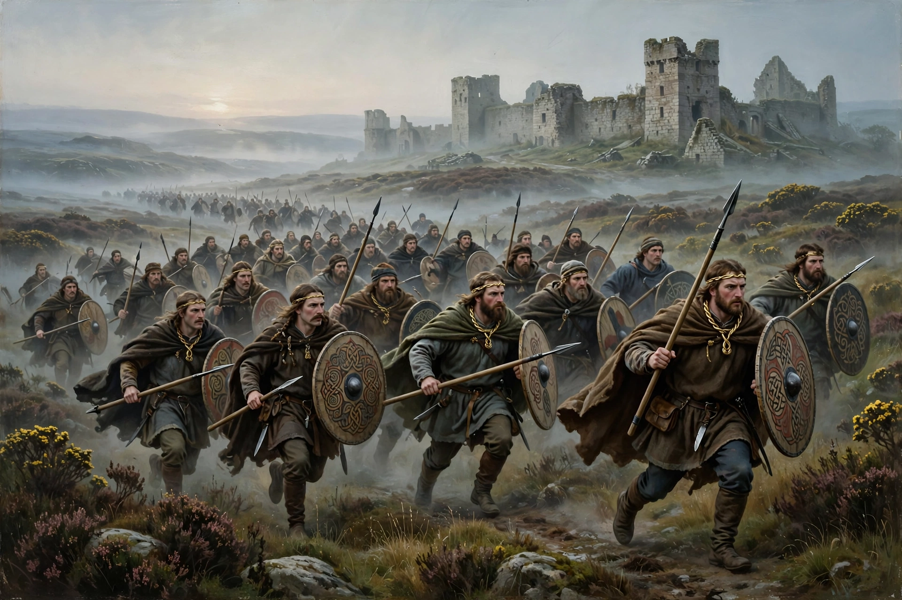

The Battle of Catraeth was fought around AD 600 between a force raised by the Brythonic kingdom of Gododdin and the Angles of Bernicia and Deira, probably at Catterick in Yorkshire. It is celebrated in the early Welsh poem Y Gododdin.

Attributed to Aneirin, the poem elegises a warband feasted for a year at Din Eidyn (Edinburgh) before riding to Catraeth, where almost all were killed. It is among the earliest surviving Welsh literature and contains an early reference to Arthur.